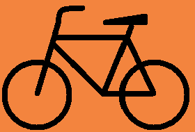
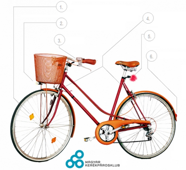

 |
Kerékpáros KRESZ |
Kerékpározás előtt
 KRESZ által előírt kötelező kerékpár-tartozékok
Kötelező még:
További szabályok
|
|
HOL SZABAD KERÉKPÁROZNI?Az úttestenAz esetek többségében kerékpárral az úttesten kell és érdemes közlekedned, hacsak nem tilos.KerékpárútonHa az út mellett van kerékpárút, akkor csak itt szabad kerékpározni. Kivétel: ha az úttesten kerékpáros nyom (piktogram) van felfestve, ugyanis ebben az esetben az úttesten is szabad kerékpározni.KerékpársávbanHa az úttesten van felfestett kerékpársáv, akkor csak itt szabad kerékpározni. A kerékpársáv egyirányú közlekedésre szolgál. Nemcsak szabálytalan, hanem veszélyes és udvariatlan is szembemenni a forgalommal!Nyitott kerékpársávbanA nyitott kerékpársávra ugyanazok a szabályok vonatkoznak, mint a kerékpársávra, két kivétellel: A nyitott kerékpársávot el szabad hagyni biciklivel, például balra kanyarodás előtt. A nyitott kerékpársávra más járművek is ráhajthatnak például, jobbra kanyarodás előtt.Kerékpárosok által is használható autóbusz forgalmi sávbanCsak abban a buszsávban szabad kerékpározni, ahol ezt tábla engedélyezi, ilyen esetekben általában kerékpáros piktogramokat is festenek az útra. Amennyiben engedélyezett kerékpárosok számára a buszsáv használata, akkor ebben a forgalmi sávban kell kerékpárral haladni. Amennyiben nem szerepel a táblán kerékpáros kiegészítő jelzés, akkor tilos a buszsávban kerékpározni!Gyalog- és kerékpárútonA gyalogosok (különösen a gyerekek és kutyák) kiszámíthatatlan mozgására, hirtelen előbukkanására mindig számítanunk kell, ezért a megengedett legnagyobb sebesség 20 km/h! A gyalog-kerékpárút használata általában kötelező, azonban ha a gyalog- és kerékpárúton a gyalogosok forgalma a kerékpárosok továbbhaladását akadályozná, vagy az úttesten van felfestett kerékpáros nyom (piktogram), a kerékpárosok az úttesten is közlekedhetnek.Gyalogos-kerékpáros zónábanGyalogos-kerékpáros zónában a kerékpárosok számára kijelölt részen a megengedett sebesség 20 km/h, a zóna többi részén 10 km/h. Egyébként ugyanazok a szabályok érvényesek rá, mint amelyek a gyalog-kerékpárútra.Kerékpáros nyomonAz úttestre festett kerékpáros piktogramokból kialakított burkolati jelek sora a kerékpárosok számára jelzi az úttesten javasolt pozíciót, egyúttal a többi járművezetőt figyelmezteti a kerékpárosok jelenlétére. Amennyiben ilyen nyom van felfestve az úttestre, akkor a párhuzamos kerékpárút, illetve gyalog-kerékpárút használata nem kötelező. Természetesen az úttesten elfoglalt pozíció csak javaslat, tehát el lehet térni tőle, valamint más járművek is ráhajthatnak, mivel nem jelent külön sávot.Kétirányú kerékpáros közlekedés számára megnyitott egyirányú utcábanEgyirányú utcába a forgalommal ellenkező irányból abban az esetben szabad behajtani, ha azt kiegészítő tábla engedi. Ez esetben szigorúan az úttest jobb oldalán kell haladni, ha van felfestett kerékpársáv, akkor ott. |
|